A comprehensive, hands-on deployment and evaluation of the open-source Wazuh SIEM platform, covering proxy traffic analysis with MITRE ATT&CK, multi-OS security configuration assessments, and WordPress hardening using custom SCA rule sets.
Read the ReportOver the past decade, cyberattacks have grown substantially in frequency and sophistication. The expansion of interconnected devices and digital infrastructure has dramatically enlarged the attack surface available to adversaries. Exploitation of software vulnerabilities, misconfigurations, and weak authentication practices has made it possible for attackers to operate at scale, often using automated tooling to probe thousands of systems simultaneously.
In response, the field of cybersecurity has matured around several complementary defensive disciplines: cryptography to protect data confidentiality and integrity, intrusion detection to monitor for suspicious activity, firewalls to gate network traffic, multi-factor authentication, and VPN tunnels. Among these, one of the most powerful—yet frequently under-deployed—approaches is Security Information and Event Management (SIEM).
SIEM systems aggregate, normalize, and correlate log data from across an entire infrastructure—firewalls, web servers, operating systems, authentication services, and more—to surface anomalies and threats in real time. Rather than responding reactively to known incidents, a well-tuned SIEM allows security teams to detect early indicators of compromise, investigate patterns across multiple data sources, and reduce mean time to response.
This report documents the end-to-end deployment and practical evaluation of Wazuh, a free and open-source SIEM platform, within a real academic production environment—the Moodle learning management system at the University of Madeira (UMa). Three distinct case studies are presented, each targeting a different layer of the system: network traffic analysis, operating system configuration hardening, and application-level security assessment.
Security Information Management (SIM) is the precursor to modern SIEM. Its core function is the collection, storage, and historical analysis of log data from diverse sources such as servers, firewalls, routers, intrusion prevention systems, and web proxies. SIM platforms normalize this information into a centralized repository, enabling retrospective threat hunting and pattern analysis over long time horizons.
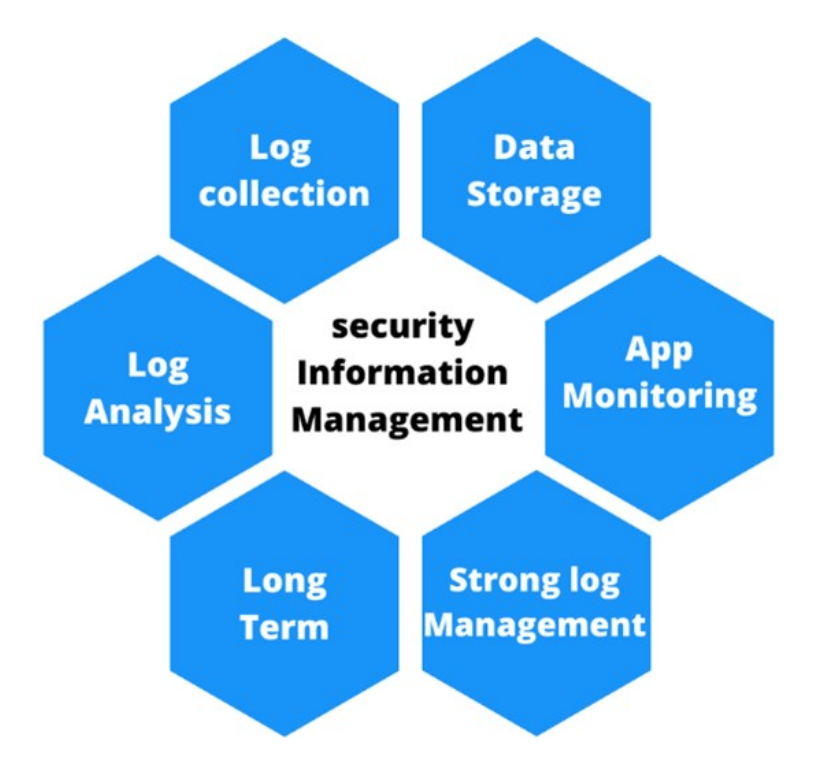
Figure 2.1: Core characteristics of a Security Information Management platform
Log files produced by systems contain structured records that describe every event occurring on a device. A typical log entry includes the following fields:
Logs can be categorized into the following primary types:
Below is an example of a Security Log from a Windows system, recording a successful logon:
Audit Success 05/03/2025 17:00:46
Microsoft-Windows-Security-Auditing 4624
Logon "An account was successfully logged on."
Subject:
Security ID: SYSTEM
Account Name: LAPTOP-1E39BHAS\$
Account Domain: WORKGROUP
Logon ID: 0x3E7
Logon Information:
Logon Type: 5
New Logon:
Security ID: SYSTEM
Account Name: SYSTEM
Account Domain: NT AUTHORITY
Logon ID: 0x3E7
Process Information:
Process ID: 0x390
Process Name: C:\Windows\System32\services.exeKey observations from this entry: Event ID 4624 maps to a successful login. The logon type 5 indicates a service-initiated session. The originating process is services.exe, consistent with expected system behavior.
An example of an Application Log, recording a restart failure in Microsoft Office:
Warning 05/03/2025 16:09:03 Microsoft-Windows-RestartManager
10010 None Cannot restart application
'C:\Program Files\Microsoft Office\root\Office16\WINWORD.EXE' (PID 8212)
- Application SID does not match Conductor SID.And a Network Log from Windows WebIO, confirming a completed HTTP transaction:
Information 05/03/2025 17:21:49 Microsoft-Windows-WebIO 115
ResponseRecieveEntity 0x298e64a9900: WebHttpReceiveEntityBody
(Identifier: 0xFD0000053000000A) (Flags: 0x0)
Information 05/03/2025 17:21:49 Microsoft-Windows-WebIO 2141
RequestState 0x298e64a9900: =====Request Completed=====
Information 05/03/2025 17:21:49 Microsoft-Windows-WebIO 2132
RequestState 0x298e64a9900: =====Reception Completed=====SIM's principal advantages are its centralized historical view of system activity, the automation of log ingestion (which is prohibitively time-consuming to perform manually at scale), and its capacity to produce compliance reports. Its limitations include high implementation cost, an inability to detect threats in real time, and large storage requirements.
Where SIM excels at historical analysis, Security Event Management (SEM) focuses on real-time threat monitoring, event correlation, and active alerting. SEM platforms ingest security events—syslogs, Windows Event Logs, SNMP traps—either through software agents installed directly on monitored hosts or through agentless collection from network devices such as firewalls and routers.
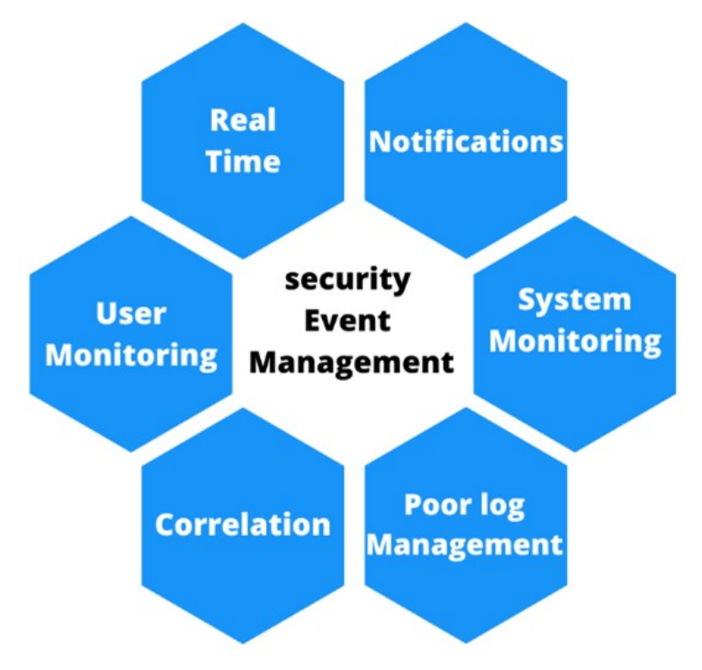
Figure 2.2: Core characteristics of a Security Event Management platform
The following is a first syslog example, generated by a disk health monitoring process:
May 11 10:40:48 scrooge disk-health-nurse[26783]: [ID 702911
user.error] m:SY-mon-full-500 c:H : partition health measures
for /var did not suffice - still using 96% of partition space
This entry reveals: timestamp (May 11 10:40:48), device identifier (scrooge),
originating process (disk-health-nurse[26783]), event ID (702911 user.error),
and a description indicating that disk partition health thresholds were not met.
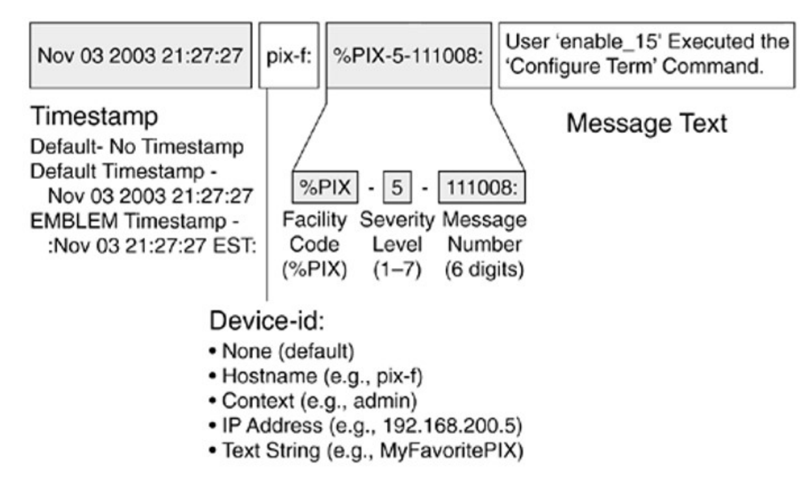
Figure 2.3: Anatomy of a syslog entry
The second syslog example, from a Cisco PIX firewall, shows: timestamp (Nov 03 2003 21:27:27),
device ID (pix-f), severity level (5 — informational), message code (111008),
and message text confirming that user enable15 executed a configuration command.
SEM's key advantages include real-time threat response capability and the use of statistical correlation algorithms to surface genuine security incidents from noisy event streams. Its limitations include weak log management compared to dedicated SIM platforms, and the privacy implications of agent-based monitoring that records all user activity on a device.
In 2005, analysts Mark Nicolett and Amrit Williams of Gartner proposed combining the complementary strengths of SIM and SEM into a unified discipline: Security Information and Event Management (SIEM). SIEM addresses the weaknesses of each individual approach—SIM's lack of real-time visibility and SEM's poor log management—by integrating both into a single platform.
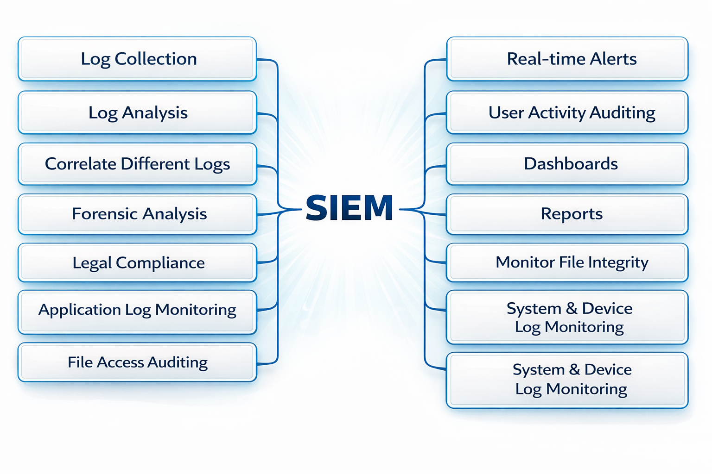
Figure 2.4: Full feature set of a modern SIEM platform
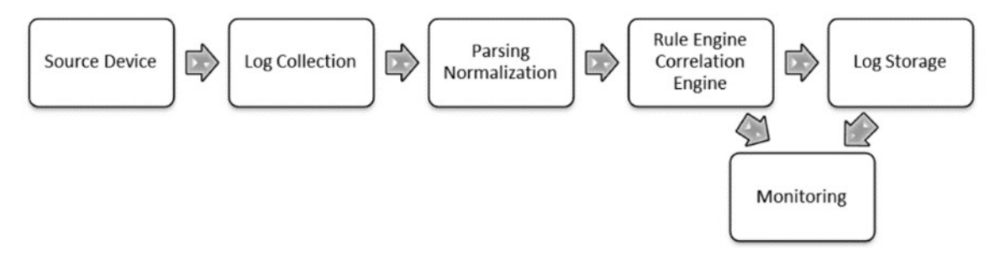
Figure 2.5: The core processing pipeline within a SIEM system
A SIEM operates through four sequential stages:
Data can be collected via two methods. In the agentless method, network devices and applications send their raw logs directly to the SIEM's central repository. This is simpler to set up but offers less visibility. In the agent-based method, a lightweight software agent is installed on each monitored host. The agent performs local pre-processing (normalization and filtering) before forwarding condensed, enriched data to the server. Agent-based collection enables real-time per-host monitoring and reduces the processing burden on the central server.
Raw log data arrives in dozens of incompatible formats. Normalization converts this heterogeneous data into a common schema, making correlation possible. The normalized output is then persisted in a centralized repository for both real-time analysis and long-term forensic investigation. A normalized log entry looks like this:
Aug 11 17:22:14 auth0 access denied for userId 34532
Daniel Berman 182.54.12.98
[11/Aug/2017:17:22:14 -0300] 182.54.12.98
authentication failed at login 34532 user Daniel BermanSIEM platforms ingest enormous volumes of events. Filtering reduces this noise by discarding irrelevant or low-value events and eliminating duplicate or empty fields before correlation is performed. This step is critical for maintaining system performance and analyst focus.
Correlated events are analyzed against rule sets to identify patterns indicative of security incidents. A simple correlation rule might be: "If more than 10 failed login attempts occur within 2 minutes from the same source IP, alert the security team."
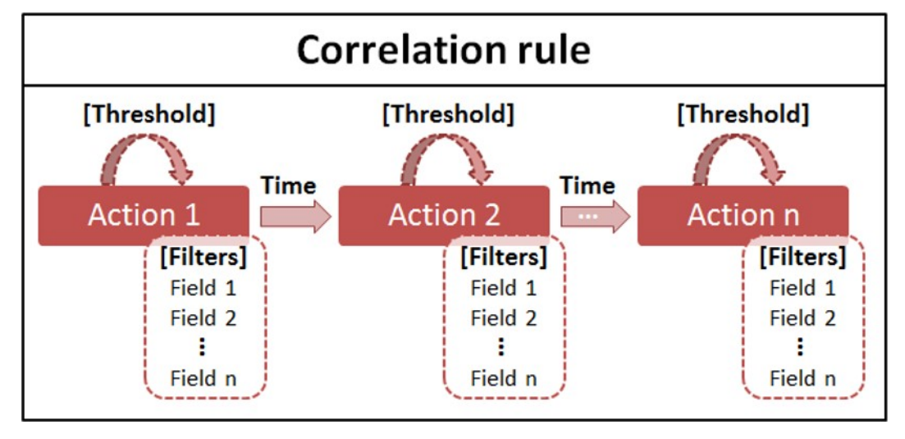
Figure 2.6: Structure of a SIEM correlation rule
Results are surfaced through an interactive dashboard, offering both real-time and historical views. The Wazuh dashboard below illustrates several key panels: total alert count, high-severity alert breakdown, failed vs. successful authentications, temporal distribution of alerts by severity level, threat category breakdown (MITRE ATT&CK tactics), and per-agent alert distribution.
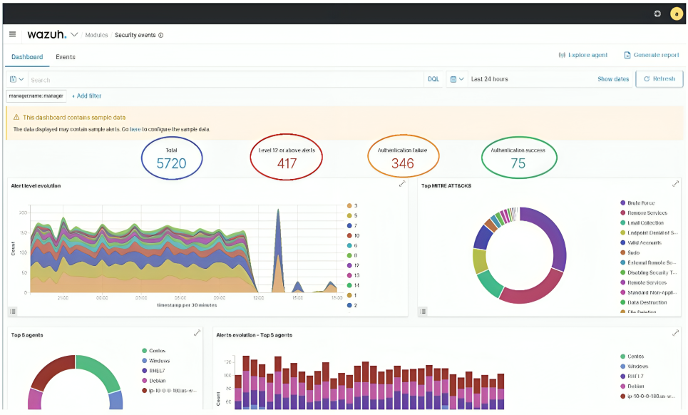
Figure 2.7: Wazuh SIEM dashboard providing a comprehensive security overview
Before selecting Wazuh for this deployment, a structured comparison was performed across four representative SIEM platforms drawn from Gartner's 2021 Magic Quadrant for SIEM. Two commercial leaders (Splunk and LogRhythm) and two open-source options (AlienVault OSSIM and Wazuh) were evaluated.
Splunk has held a Leader position in Gartner's Magic Quadrant for nine consecutive years. It provides real-time log collection and indexing, an advanced search language (SPL — Search Processing Language), machine learning-driven anomaly detection, interactive dashboards and reports, customizable security alerts, and a rich ecosystem of certified integrations. The primary drawback is its licensing cost, which places it out of reach for many organizations.
LogRhythm specializes directly in SIEM and combines traditional log management with AI-driven analysis and automated incident response. Notable capabilities include geolocation visualization of event origins, file integrity monitoring, endpoint forensics, and case management workflows designed to prevent alerts from being missed. Like Splunk, it is a commercial product with associated licensing costs.
AlienVault OSSIM is the leading open-source SIEM alternative. It supports three distinct correlation modes (logical, cross-correlation, and inventory correlation) and includes a unique community threat intelligence sharing platform called Open Threat Exchange (OTX). However, it lacks AI and machine learning capabilities, and its log collection and analysis features are comparatively limited.
| Feature | Splunk | LogRhythm | AlienVault OSSIM | Wazuh |
|---|---|---|---|---|
| Log Collection & Analysis | ✅ | ✅ | ❌ | ✅ |
| Reports | ✅ | ✅ | ✅ | ✅ |
| Alerts | ✅ | ✅ | ✅ | ✅ |
| Machine Learning | ✅ | ✅ | ❌ | ❌ |
| Forensic Analysis | ✅ | ✅ | ✅ | ✅ |
| Incident Response | ✅ | ✅ | ❌ | ✅ |
| Open Source | ❌ | ❌ | ✅ | ✅ |
| Free to Use | ❌ | ❌ | ✅ | ✅ |
| Artificial Intelligence | ✅ | ✅ | ❌ | ❌ |
| Threat Intelligence | ✅ | ✅ | ✅ | ✅ |
| Threat Sharing Platform | ❌ | ❌ | ✅ | ❌ |
| Geolocation | ✅ | ✅ | ✅ | ✅ |
Wazuh was selected for this deployment due to its combination of comprehensive core SIEM features, active response capabilities, open-source licensing, and zero cost. While it lacks AI/ML-driven detection, its rule-based engine—augmented with the MITRE ATT&CK framework and CIS Benchmarks— provides robust detection coverage for the target environment.
Wazuh is a free, open-source SIEM and XDR (Extended Detection and Response) platform. It unifies endpoint monitoring, log analysis, vulnerability detection, configuration assessment, file integrity monitoring, and active incident response into a single cohesive platform. It is highly configurable and scales from small environments to enterprise deployments.
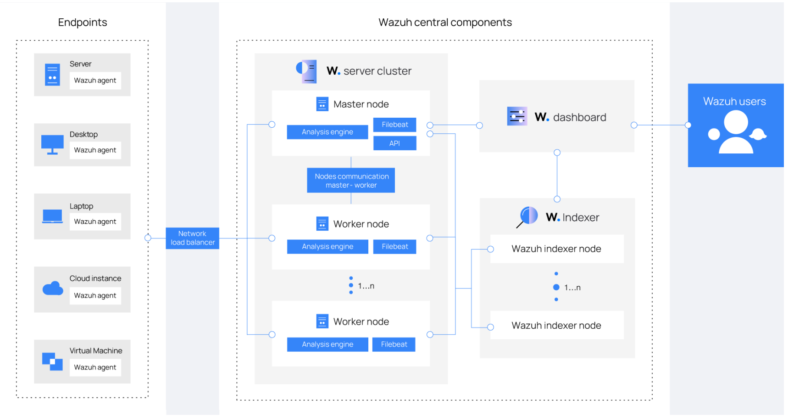
Figure 4.1: End-to-end data flow across the Wazuh platform components
The data flow begins with agents installed on monitored endpoints. These agents collect local telemetry—logs, system events, file integrity changes, vulnerability data—and transmit it over an encrypted channel to the central server. The server decodes and enriches the data using rules, indicators of compromise (IOCs), and threat intelligence feeds, then generates structured alerts. The indexer stores and indexes these alerts for near-real-time search and retrieval. Finally, the dashboard presents this information to security analysts through interactive panels and drill-down views.
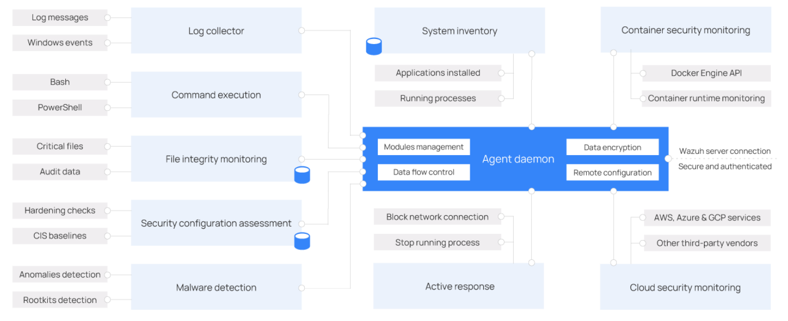
Figure 4.2: Wazuh agent modular architecture
The Wazuh agent runs on Linux, Windows, macOS, Solaris, and AIX. Its modular design allows individual capabilities to be enabled or disabled per deployment requirement. Key modules include:
The Wazuh Indexer is a full-text search and analytics engine built on OpenSearch. It stores alerts as JSON documents in four primary index topics:
wazuh-alerts — Alerts triggered when events match a defined rule.wazuh-archives — All raw events, regardless of whether they matched a rule.wazuh-monitoring — Agent connection state (active, disconnected, never connected).wazuh-statistics — Server performance metrics.The following example query retrieves the most recent lateral movement event using SSH:
GET /wazuh-alerts-4.x-*/_search{ "query": { "bool": { "must": [ {"term": {"rule.mitre.tactic": "Lateral Movement"}}, {"term": {"rule.mitre.technique": "SSH"}} ] } }, "sort": [{"timestamp": {"order": "desc"}}], "size": 1 }
A sample response from this query:
{
"timestamp": "2022-04-24T17:24:56.110+0000",
"agent": {"ip": "10.0.1.52", "name": "Amazon", "id": "001"},
"data": {"srcip": "68.183.216.91", "srcport": "53820"},
"rule": {
"description": "sshd: insecure connection attempt (scan).",
"id": "5706",
"level": 6,
"mitre": {
"technique": ["SSH"],
"id": ["T1021.004"],
"tactic": ["Lateral Movement"]
}
},
"GeoLocation": {
"city_name": "Frankfurt am Main",
"country_name": "Germany",
"region_name": "Hesse"
}
}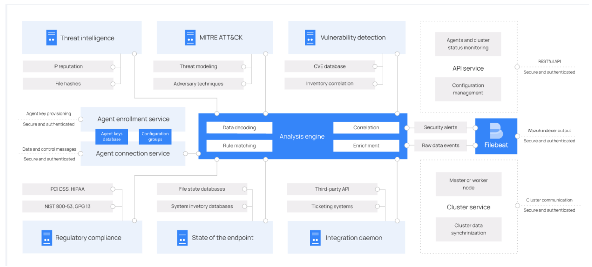
Figure 4.3: Wazuh server internal component architecture
The server is the processing core of the platform. It receives encrypted telemetry from agents, decodes and enriches it through the analysis engine, applies rule-based and IOC-based detection, and generates structured security alerts forwarded to the indexer via Filebeat. Key server components include the Analysis Engine (event decoding, correlation, and alert generation), the Wazuh RESTful API (programmatic platform management), and the Wazuh Cluster Daemon (horizontal scaling and multi-server synchronization).
The Wazuh Dashboard provides a graphical interface for navigating security events, reviewing agent status, exploring generated reports, managing platform configuration, and creating custom detection rules. It also includes a built-in API console for direct platform interaction.
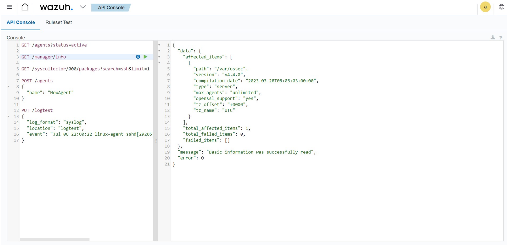
Figure 4.4: Wazuh API console demonstrating real-time platform queries
Wazuh was deployed on an Ubuntu 22.04 host within the University of Madeira's infrastructure, following the compact installation model (all three server-side components—indexer, server, and dashboard—on a single machine). Three monitored systems were enrolled as Wazuh agents.
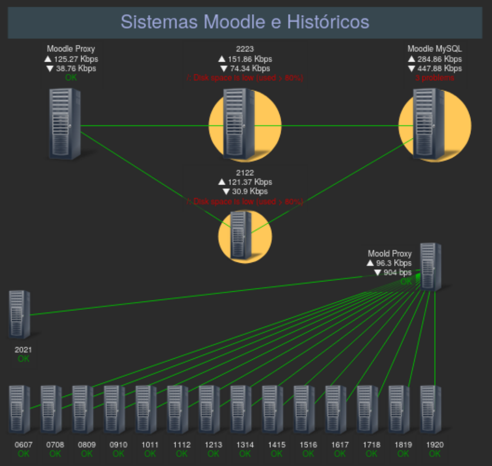
Figure 5.1: Architecture of the monitored environment — Moodle Proxy, Application Server, and Database
The proxy acts as the outermost layer of the architecture, receiving all external HTTP/HTTPS requests and forwarding only authorized traffic to the Moodle application server. Given its direct exposure to the internet, it is the component most frequently targeted by automated scanning tools, bots, and adversarial probes.
OS: CentOS 8 | Kernel: 5.4.203 | Role: Reverse proxy, access control, traffic filtering
Moodle is an open-source learning management platform used by students, faculty, and administrators at UMa. It handles personal and sensitive academic data and must enforce strict access control. While the proxy filters port-80 traffic, direct requests to the application layer are possible, making it susceptible to attacks such as SQL injection and brute force credential attacks.
OS: Debian 11 | Kernel: 5.15.104 | Web Server: Apache 2.4.54 | Moodle Version: 4.0.2
The database stores all Moodle content and user data. It is only reachable from the Moodle application server, reducing its exposure surface. However, threats such as SQL injection from a compromised application layer, unauthorized access, and data exfiltration remain relevant risks.
OS: OpenSUSE 15.4 | Kernel: 5.15.104 | Database: MariaDB 10.6.10
This case study aimed to analyze one week of traffic recorded at the proxy (May 4–11) using Wazuh's integrated MITRE ATT&CK framework. The goal was to identify attacker tactics and techniques in use against the system, understand attacker intent from a defender's perspective, and surface specific targets being probed to inform hardening decisions.
| Tactic ID | Tactic Name | Description |
|---|---|---|
| TA0043 | Reconnaissance | Active or passive collection of information about the target organization, infrastructure, or personnel. |
| TA0005 | Defense Evasion | Techniques such as process injection, obfuscation, or disabling security software to avoid detection. |
| TA0007 | Discovery | Using native OS tools to learn about the system and internal network before deciding how to act. |
| TA0004 | Privilege Escalation | Exploiting weaknesses, misconfigurations, or vulnerabilities to obtain elevated permissions. |
| TA0001 | Initial Access | Techniques that use various entry vectors to gain an initial foothold in the network. |
The two most frequently observed tactics were Reconnaissance (T1595.002 — Vulnerability Scanning) and Defense Evasion (T1055 — Process Injection). All recorded events carried a severity level of 10, and every rule description pointed to HTTP 400-series error codes from the same IP range, indicating large-scale automated scanning behavior rather than targeted manual attacks.
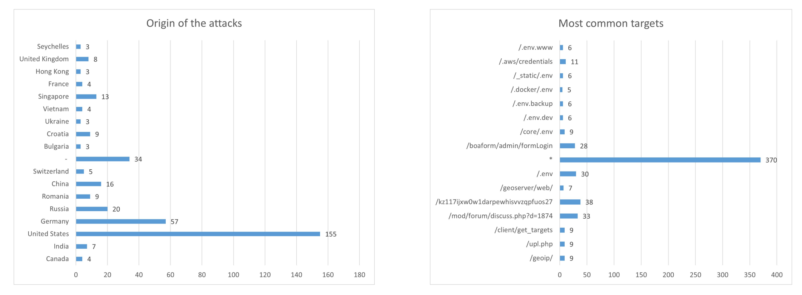
Figure 6.1 & 6.2: Attack origin countries and most frequently targeted URL paths over the analysis period
The attack origin data shows the United States, Germany, and Russia as the top three source countries. Given the automated nature of these events, these likely represent VPS infrastructure and cloud exit nodes used by botnets rather than attackers physically located in those countries.
The most targeted URL paths tell a clear story about attacker intent:
* (wildcard, 370 events) – Broad scanning across all available paths, consistent with automated crawlers seeking any exploitable surface./.env and variants (30+ combined events) – Attempts to access environment files that commonly store database credentials, API keys, and other sensitive configuration values. A successful read of .env could grant full access to the database./mod/forum/discuss.php?d=1874 (33 events) – Targeted probing of a specific Moodle forum thread, likely attempting to identify vulnerable Moodle components or enumerate accessible content./.aws/credentials (11 events) – Probing for exposed AWS credential files that could enable cloud infrastructure takeover./kz117ijxw0w1darpewhisvvzqpfuos27 (38 events) – A random-looking path string, consistent with automated tools testing for path traversal or misconfigured file access.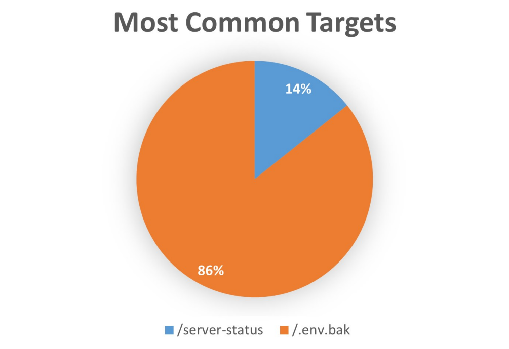
Figure 6.3: Target distribution for the T1055 Process Injection technique
Seven events were attributed to the T1055 Process Injection technique, all originating from United States-based IP addresses. Two specific targets were recorded:
Target 1: /server-status — This endpoint is a built-in Apache diagnostic
page that, if publicly exposed, reveals the server's current uptime, active connections, request
rates, and worker thread status. This intelligence would allow an attacker to identify peak traffic
periods, understand server capacity, and potentially coordinate denial-of-service timing.
Wazuh's security report confirmed this attack returned HTTP 404:
"data": {
"protocol": "GET",
"srcip": "35.216.237.60",
"id": "404",
"url": "/server-status"
}
Target 2: /.env.bak — Backup copies of .env files are often
left behind after server configuration changes and may be publicly accessible even when the primary
.env is correctly secured. A successful read of this file could expose database
credentials, potentially enabling an attacker to delete the production database and demand a ransom.
This attack also returned HTTP 404:
"data": {
"protocol": "POST",
"srcip": "3.142.194.198",
"id": "404",
"url": "/.env.bak"
}All attacks recorded during the one-week analysis period returned HTTP 404 or 405 response codes, confirming that no information was successfully accessed and no security boundaries were breached. The proxy demonstrated robust defensive behavior, correctly blocking all probed paths.
The predominance of Reconnaissance and Defense Evasion tactics indicates that adversaries are in an early-stage probing phase—seeking entry points and sensitive files rather than executing a targeted, pre-planned attack. The MITRE ATT&CK integration in Wazuh was invaluable for reframing raw HTTP error logs as structured threat intelligence, enabling a clear characterization of attacker behavior and intent.
This case study evaluated the Security Configuration Assessment (SCA) module across the three operating systems in the monitored environment: CentOS 8 (Proxy), Debian 11 (Moodle), and OpenSUSE 15.4 (Database). The SCA module was enabled in each agent's configuration file:
<sca>
<enabled>yes</enabled>
<scan_on_start>yes</scan_on_start>
<interval>12h</interval>
<skip_nfs>yes</skip_nfs>
</sca>The SCA module automatically detects the running OS and applies the appropriate CIS (Center for Internet Security) Benchmark policy set, running a series of automated control tests and generating a score, a list of passed/failed checks, and remediation guidance for each failure.
Assessment date: May 23, 2025, 16:25 | Policy: CIS Benchmark for CentOS Linux 8
Results: 186 rules applied — 85 passed, 66 failed, 35 not applicable | Score: 56%
Primary failure categories included temporary directory mount configurations, directory permission settings, network and firewall configurations, and file permission hardening.
Highlighted failure — Rule 6504: The /tmp directory was not configured
as a separate mount point. This misconfiguration could allow an attacker to plant executable code
in /tmp or establish a hardlink to receive a copy of any program updates automatically.
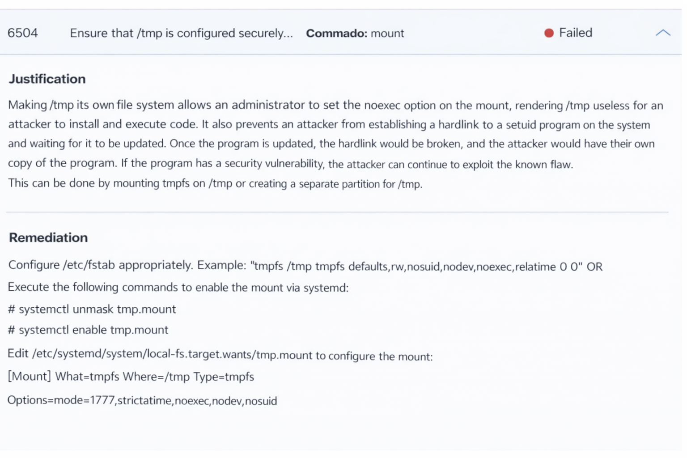
Figure 7.1: Rule 6504 — /tmp configuration failure with remediation guidance
The SCA tool provided a clear remediation path: mount tmpfs on /tmp
or create a dedicated partition for it, and configure the noexec mount option to prevent
execution of code stored in that directory.
Assessment date: May 24, 2025, 04:30 | Policy: CIS Benchmark for Debian/Linux 10
Results: 192 rules applied — 67 passed, 108 failed, 17 not applicable | Score: 38%
The lower score is partly attributable to the use of a Debian 10 benchmark against a Debian 11 system, which may produce additional false failures due to version-specific differences. Despite this, the test set revealed real and significant security gaps.
Highlighted failure — Rule 2667: The system did not have account lockout configured for repeated failed password attempts. Without lockout, the system is highly vulnerable to brute-force credential attacks.
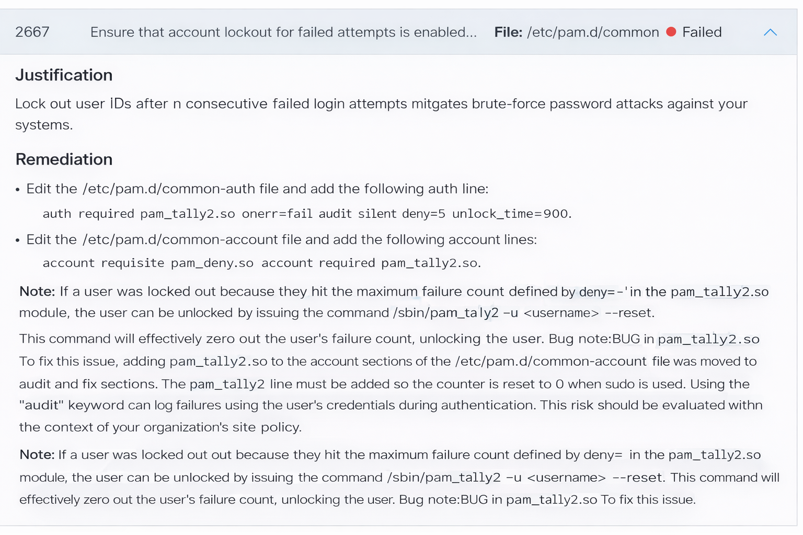
Figure 7.2: Rule 2667 — Account lockout misconfiguration and PAM remediation guidance
The remediation involves editing /etc/pam.d/common-auth to add the pam_tally2
module, which counts consecutive failed logins and locks the account after a configurable threshold.
It also requires corresponding entries in /etc/pam.d/common-account to enforce the lockout.
It was observed that the SCA run on this system did not include Apache configuration checks, despite Wazuh supporting Apache policy sets. This was attributed to a missing agent configuration directive to load the additional policy file—a correctable configuration gap.
Assessment date: May 24, 2025, 04:18 | Policy: CIS Benchmark for Linux (generic auditing)
Results: 23 rules applied — 3 passed, 12 failed, 8 not applicable | Score: 20%
No CentOS or Debian-specific policy existed for OpenSUSE, so the generic Linux auditing benchmark was applied. This limited the test coverage significantly—only 23 checks vs. 186+ for the other systems— and focused primarily on SSH hardening. Despite this, a high-impact failure was identified and remediated.
Highlighted failure — Rule 3008: The SSH daemon's MaxAuthTries
parameter was set to 5, exceeding the CIS-recommended maximum of 4. Reducing this value
limits the number of password attempts an attacker can make per SSH connection before being
disconnected, reducing brute-force attack effectiveness.
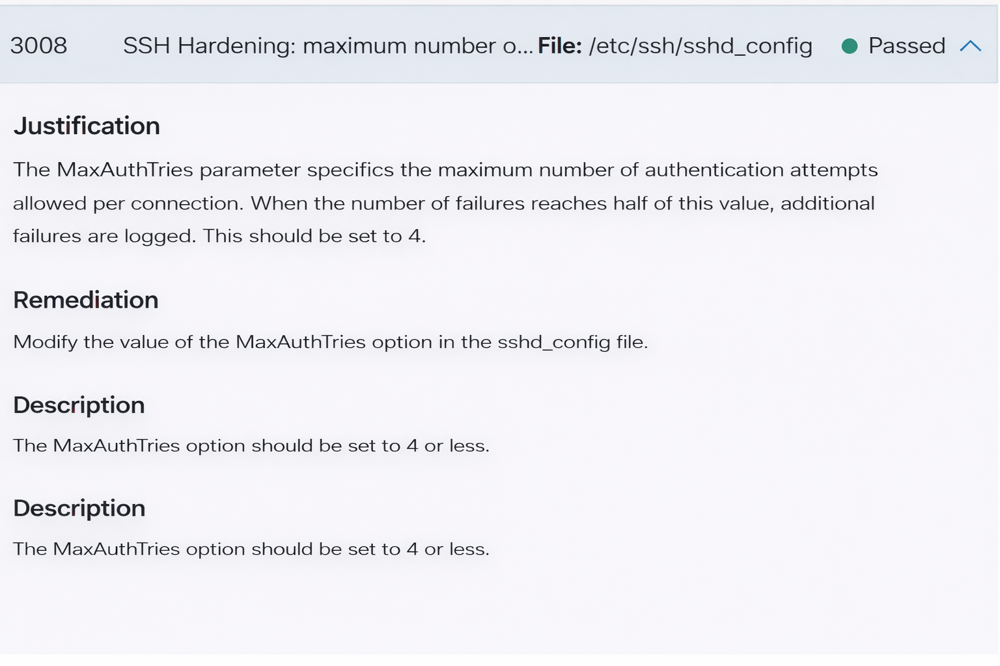
Figure 7.3: Rule 3008 — SSH MaxAuthTries hardening (shown post-remediation as Passed)
The remediation was straightforward: update MaxAuthTries 4 in /etc/ssh/sshd_config
and restart the SSH service. On the next scheduled SCA scan, the check was recorded as passed—
demonstrating the feedback loop between SCA findings and system hardening in practice.
The SCA module proved highly effective at identifying OS-level misconfigurations that could serve as attack vectors. Each failed check was accompanied by a justification explaining the security implication and concrete remediation steps, creating an actionable hardening roadmap for each system.
The assessment also highlighted a limitation: Wazuh ships with pre-defined policies only for the most commonly deployed operating systems. For less common distributions like OpenSUSE, a generic policy must be used, reducing coverage. However, the platform fully supports custom policy creation, enabling teams to extend coverage to any environment.
The two previous case studies demonstrated Wazuh SCA's effectiveness at the OS layer. This case study extends that analysis to the application layer, evaluating a WordPress installation using a custom-authored SCA policy that goes beyond the default rule set.
WordPress was selected due to its widespread deployment and the availability of a Wazuh-authored reference policy. The custom policy was developed following Wazuh's official WordPress security assessment guide. The WordPress instance was deployed on Debian Linux running Apache, monitored by a Wazuh agent with SCA enabled.
Since Wazuh ships without a WordPress-specific SCA policy, a custom policy was authored. The following table describes all eleven checks included in the policy:
| Check ID | Description |
|---|---|
| 100000 | Verify that the installed WordPress version is the latest available. |
| 100001 | Verify that .htaccess file permissions are set to 644. |
| 100002 | Verify that WordPress debug mode is disabled. |
| 100003 | Verify that no backup, SQL, or zip files exist in the WordPress root directory. |
| 100004 | Verify that common administrative account names (admin, administrator, backup, webmaster) are not in use. |
| 100005 | Verify that directory browsing is disabled in .htaccess. |
| 100006 | Verify that main WordPress directories (wp-admin, wp-includes, wp-content, etc.) are set to 755. |
| 100007 | Verify that no outdated plugins are present. |
| 100008 | Verify that no outdated themes are present. |
| 100009 | Verify that a security plugin is installed and active. |
| 100010 | Verify that the WordPress database table prefix has been changed from the default wp_. |
Assessment date: June 1, 2025, 04:29 | Score: 54% (6 passed, 5 failed)
| Check ID | Description | Result |
|---|---|---|
| 100000 | WordPress version is up to date | FAILED |
| 100001 | .htaccess permissions set to 644 | FAILED |
| 100002 | WordPress debug mode disabled | PASSED |
| 100003 | No backup/SQL/zip files in root | PASSED |
| 100004 | No common admin account names in use | FAILED |
| 100005 | Directory browsing disabled | FAILED |
| 100006 | Main directory permissions set to 755 | PASSED |
| 100007 | No outdated plugins | PASSED |
| 100008 | No outdated themes | PASSED |
| 100009 | Security plugin installed and active | FAILED |
| 100010 | Database table prefix changed from default | PASSED |
This check detected that the WordPress installation was using one or more of the following
predictable administrative usernames: admin, administrator, backup,
or webmaster. These names are universally known and are the first credential combinations
tested by brute-force tools. Their presence substantially increases the probability of a successful
credential-stuffing or dictionary attack, particularly when combined with a weak or reused password.
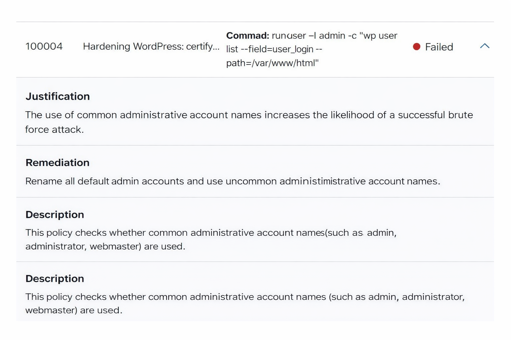
Figure 8.1: Rule 100004 — Common admin account name detection and remediation guidance
The remediation is straightforward: rename all administrative accounts to non-predictable, unique names. Combined with a strong password policy, this single change significantly reduces the attack surface for credential-based attacks.
This check confirmed that no dedicated WordPress security plugin was installed and active on the site. WordPress security plugins provide multiple defense layers including brute-force login protection, malicious request filtering, file change monitoring, and two-factor authentication support. Their absence leaves the WordPress application defenseless against a wide range of common exploits.
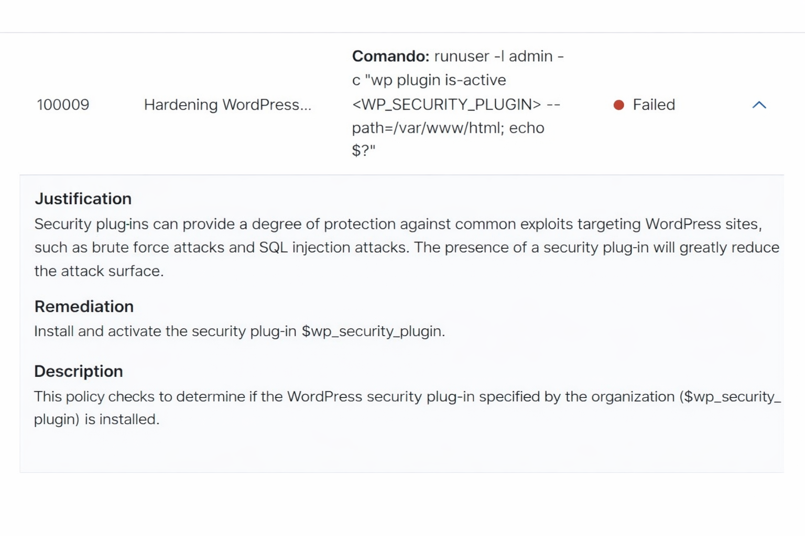
Figure 8.2: Rule 100009 — Missing security plugin detection and installation guidance
All eleven custom checks executed correctly and produced accurate results. The custom SCA policy
successfully identified five high-impact security issues: an outdated WordPress core version,
misconfigured .htaccess permissions, predictable admin account names, missing
directory browsing restrictions, and absence of a security plugin.
This case study demonstrates that Wazuh's SCA engine is not limited to OS-level hardening—it can be extended to assess virtually any application layer when paired with appropriate custom rule sets. The combination of automated scanning, precise failure identification, and actionable remediation guidance makes this capability highly practical for production security operations.
The compact installation was performed on Ubuntu 22.04, co-locating all three central components (indexer, server, dashboard) on a single host. Digital certificates were generated and distributed at each stage to ensure all inter-component communication was authenticated and encrypted.
The indexer installation began by defining node names and IP addresses for all three components in a shared configuration file:
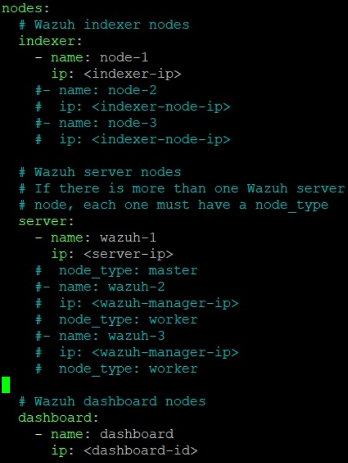
Figure 9.1: Node topology defined in config.yml before certificate generation
With this topology defined, digital certificates were generated for each component. The indexer
package was then installed and configured via opensearch.yml:
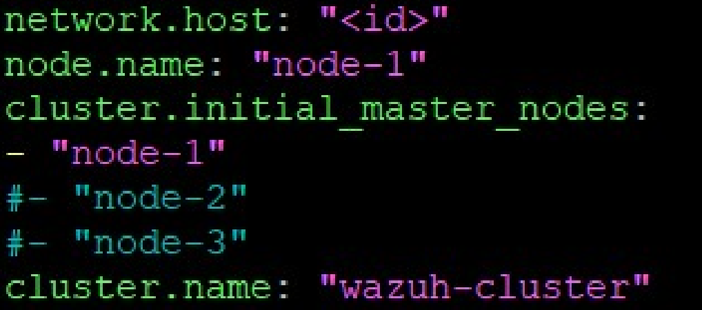
Figure 9.2: opensearch.yml configuring the indexer node and cluster membership
The server package was installed and initiated without additional configuration. Filebeat—responsible for forwarding processed alerts from the server to the indexer—was then installed and pointed at the indexer's IP address and port 9200 (the standard OpenSearch/Elasticsearch API port):
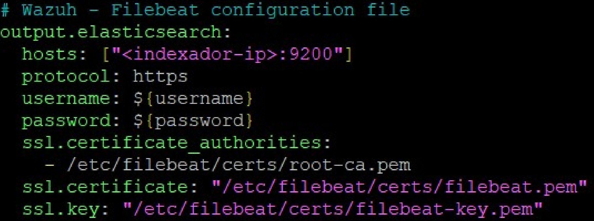
Figure 9.3: Filebeat configuration connecting the server to the indexer over HTTPS
The dashboard was installed and configured to accept connections on all interfaces (port 443) and communicate with the indexer at port 9200:
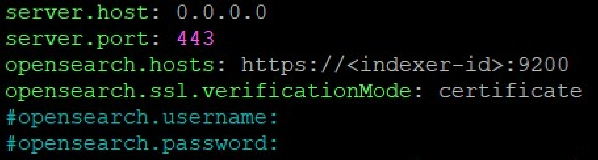
Figure 9.4: Dashboard configuration binding to all interfaces on HTTPS port 443
Agent enrollment is guided directly from the Wazuh dashboard. The wizard prompts the administrator to select the target OS family and version, then provides the exact installation command with pre-populated server address and agent name.
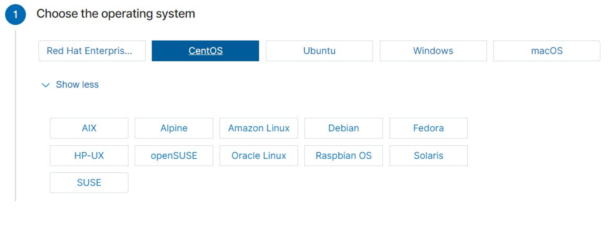
Figure 9.5: OS selection step in the Wazuh agent enrollment wizard
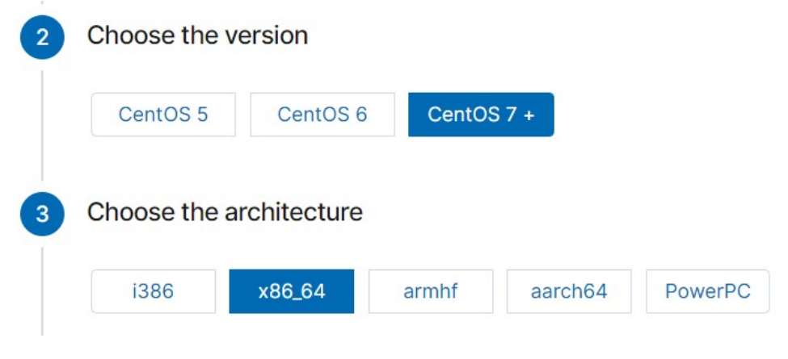
Figure 9.6: Version and architecture selection for the CentOS agent
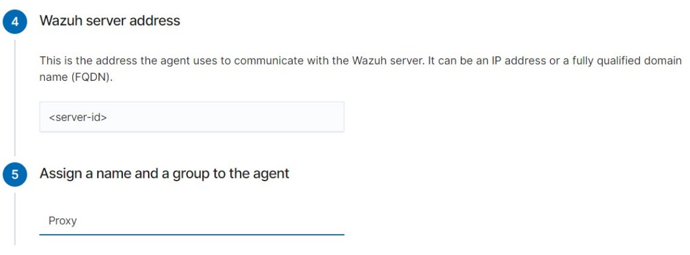
Figure 9.7: Server address and agent name assignment (named "Proxy" for the proxy server)
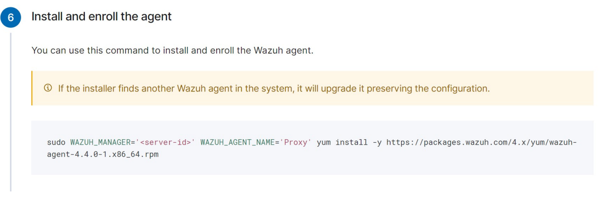
Figure 9.8: Auto-generated agent installation command for the Proxy host
This project demonstrated the full deployment and practical evaluation of the Wazuh SIEM platform across a real production academic environment. Three case studies, each targeting a different layer of the system stack, collectively validated Wazuh's capabilities and surfaced actionable security intelligence.
The MITRE ATT&CK integration transformed raw HTTP access logs into structured, tactically contextualized threat data. The analysis revealed that the system is under constant automated probing—primarily targeting environment configuration files and known application endpoints. Critically, the proxy's defensive configuration successfully blocked all recorded attack attempts, with every event returning HTTP 404 or 405.
The SCA module identified concrete, exploitable misconfigurations across all three
operating systems: an unprotected /tmp partition on CentOS, missing account lockout
on Debian, and an SSH MaxAuthTries value exceeding the CIS recommendation on OpenSUSE.
For each finding, the platform provided clear, implementable remediation guidance. In the case of
the OpenSUSE SSH hardening check, the fix was applied and validated within the same assessment
cycle—demonstrating the tight feedback loop between detection and remediation that makes SCA
operationally valuable.
The custom SCA policy for WordPress extended this capability to the application layer, identifying five significant security gaps including use of predictable admin account names and absence of a security plugin. This demonstrates that Wazuh's SCA engine, while powerful out of the box, is considerably more valuable when teams invest in writing domain-specific policy sets tailored to their application stack.
Throughout the deployment, Wazuh demonstrated strong performance characteristics with minimal resource consumption under the three-agent workload. As agent count scales, performance profiling and horizontal server scaling (via the cluster daemon) should be considered.
Areas identified for future investigation include deeper exploration of Wazuh's active response capabilities (automated blocking of attacking IPs), creation of custom correlation rules for environment-specific attack patterns, and the design of SCA policy sets targeting the Moodle application itself.
[1] Gabriel, R. et al. (2009). Analyzing Malware Log Data to Support Security Information and Event Management. IEEE DBKDA 2009. DOI: 10.1109/DBKDA.2009.26
[2] Podzins, O. & Romanovs, A. (2019). Why SIEM is Irreplaceable in a Secure IT Environment? IEEE eStream 2019. DOI: 10.1109/eStream.2019.8732173
[3] IBM. Security Information and Event Management (SIEM). ibm.com/topics/siem
[4] González-Granadillo, G. et al. (2021). SIEM: Analysis, Trends, and Usage in Critical Infrastructures. Sensors. DOI: 10.3390/s21144759
[5] Cinque, M. et al. (2018). Challenges and Directions in SIEM. IEEE ISSREW 2018. DOI: 10.1109/ISSREW.2018.00-24
[6] Stankovic, S. et al. (2022). A Review of Wazuh Tool Capabilities for Detecting Attacks Based on Log Analysis. IcETRAN 2022. ResearchGate
[7] MITRE ATT&CK Enterprise Tactics. attack.mitre.org
[8] Wazuh Platform Documentation. documentation.wazuh.com
[9] CIS Benchmarks. cisecurity.org/cis-benchmarks
[10] Wazuh WordPress Security Assessment Guide. wazuh.com/blog